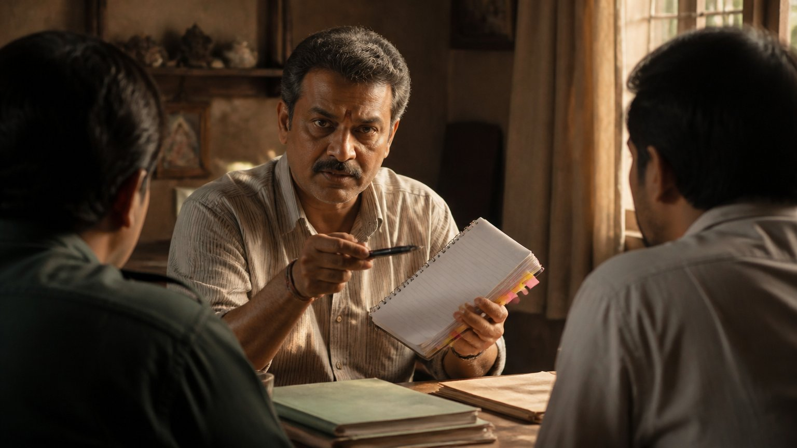

आप कितने सत्संग सुन चुके हैं? और उनमें से कितनी बातें सच में आपके जीवन में उतरीं? आचार्य उपेंद्र जी इस छोटे से प्रवचन में एक ऐसा दर्पण दिखाते हैं जिसमें लगभग हर साधक अपना चेहरा पहचान लेगा।
अच्छा श्रोता कौन है?
सत्संग का अर्थ है सत्य का संग। पर सत्य का संग तभी होता है जब सुनने वाला सही भाव से सुने।
आचार्य जी स्पष्ट कहते हैं: अच्छा श्रोता अपनी आध्यात्मिक प्रगति के लिए सुनता है, दूसरों के दोष देखने के लिए नहीं। और सत्संग के मार्ग में पहला विघ्न यही है कि हम स्वयं को छोड़कर दूसरे को देखने लगते हैं।
"आयोजन बहुत अच्छा था"
सत्संग समाप्त हुआ। किसी ने पूछा, "क्या सिखाया?" उत्तर मिला, "अरे, वह छोड़ो। आयोजन बहुत अच्छा था, भोजन की व्यवस्था बढ़िया थी।"
उसने कुछ धारण (भीतर उतारना, internalize करना) किया? पूछो तो कहेगा, "आत्मा-आत्मा कुछ बोल रहे थे, सुनने में अच्छा लगा।"
आचार्य जी पूछते हैं कि कान तो पवित्र हो गया, पर हृदय पवित्र कब होगा?
आचार्य जी हँसी में कहते हैं कि बुद्धि तो शायद अगले जन्म में पवित्र होगी। ऐसा श्रोता केवल कान पवित्र करने गया था, और इसलिए वह पूर्णतः व्यर्थ है।
पिछले सत्संग से आप क्या लेकर लौटे थे: एक अनुभव, या एक परिवर्तन?
दूसरों के दोषों की नोटबुक
अब एक और प्रकार का श्रोता। वह ध्यान से सुनता है, पर किसी और के लिए।
गुरु कहते हैं, "क्रोध मत करो, अन्यथा ऐसा होगा।" तुरंत मन बोलता है, "यह तो ठीक उन्हीं के लिए कहा! लिखो, लिखो, बाद में बताना पड़ेगा।" बच्चे की हठ पर बात आई तो भाभी का बच्चा याद आया। कामवासना और पिछले जन्म के कर्मों पर बात आई तो पड़ोस वाली आंटी याद आईं।
आचार्य जी कहते हैं, स्वयं पर ध्यान देकर देखिए। अहंकार इतना गहरा होता है कि गुरु की वाणी भी हमें दर्पण नहीं, दूसरों पर उँगली उठाने का साधन लगने लगती है।

"मेरे लिए तो कुछ था ही नहीं"
प्रवचन समाप्त होता है और यह श्रोता संतोष से कहता है कि अच्छा है, उसके लिए तो कुछ बोला ही नहीं गया, जो था वह सब बाकी लोगों के लिए बोला गया।
भाभी के लिए: क्रोध मत करो। चाचा के लिए: झूठ मत बोलो। बुआ के लिए: चिल्लाओ मत। पत्नी के लिए: शांत रहो। और मेरे लिए? "जाकर सिखाओ, संदेश फैलाओ।" मैं तो अनुचान हूँ, अब जाकर सबको ठीक करता हूँ।
पर सच्चाई उलटी है। वह संपूर्ण वेदांत (उपनिषदों का आत्मज्ञान) तुम्हारे लिए था। पड़ोसी के लिए वह कभी था ही नहीं।
आज जो बात आपको "किसी और के लिए" लगी, क्या वह सच में आपके लिए नहीं थी?
नर से नारायण की यात्रा
अच्छा श्रोता अहंकार से रहित होकर हर बात को स्वयं पर लागू करता है: "मैं कहाँ गलत था?" वह उतना ही ग्रहण करता है, अपनी नर से नारायण (मनुष्य से दिव्यता) की यात्रा के लिए।
जब भीतर सुधार होता है, तो बाहर दोष देखना अपने आप बंद हो जाता है। मैं अपना ठीक करूँगा, तो बाकी भी ठीक होने लगेगा। और यदि दूसरे फिर भी न बदलें, तब जाकर मैं उनके लिए मार्गदर्शक बन सकता हूँ या उन्हें गुरु तक पहुँचा सकता हूँ।
आचार्य जी कहते हैं कि जब तक मैं उसे स्वयं लागू नहीं करता, तब तक मैं उसका अधिकारी नहीं हूँ।
मुख्य बातें
- अच्छा श्रोता अपनी आध्यात्मिक प्रगति के लिए सुनता है, दूसरों के दोष खोजने के लिए नहीं।
- सत्संग का पहला विघ्न है: स्वयं को छोड़कर दूसरे को देखना।
- केवल सुनने से कान पवित्र होते हैं; धारण करने से हृदय पवित्र होता है।
- गुरु की हर बात सबसे पहले आपके लिए है, पड़ोसी के लिए नहीं।
- स्वयं को सुधारने पर बाहर दोष दिखना बंद हो जाता है।
- जब तक आप स्वयं ज्ञान को जीवन में नहीं उतारते, तब तक दूसरों को सिखाने के अधिकारी नहीं हैं।